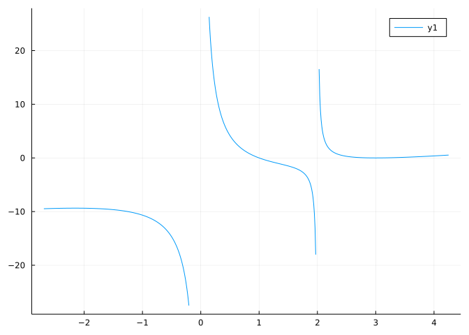
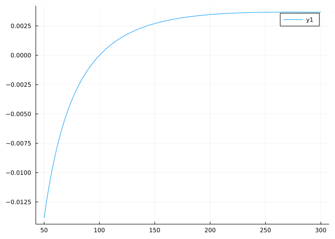
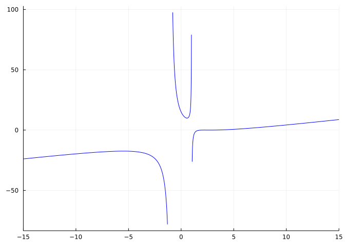

With these, a sketch fills in between the points/lines associated with these values.
After identifying asymptotic behaviours, a curve sketch involves identifying the \(y\) intercept, if applicable; the \(x\) intercepts, if possible; the local extrema; and changes in concavity. From there a sketch fills in between the points. In this example, the periodic function \(f(x) = 10\cdot\sin(\pi/2\cdot x)\) is sketched over \([0,4]\).
Though this approach is most useful for hand-sketches, the underlying concepts are important for properly framing graphs made with the computer.
We can easily make a graph of a function over a specified interval. What is not always so easy is to pick an interval that shows off the features of interest. In the section on rational functions there was a discussion about how to draw graphs for rational functions so that horizontal and vertical asymptotes can be seen. These are properties of the “large.” In this section, we build on this, but concentrate now on more local properties of a function.
Example
Produce a graph of the function \(f(x) = x^4 -13x^3 + 56x^2-92x + 48\).
We identify this as a fourth-degree polynomial with postive leading coefficient. Hence it will eventually look \(U\)-shaped. If we graph over a too-wide interval, that is all we will see. Rather, we do some work to produce a graph that shows the zeros, peaks, and valleys of \(f(x)\). To do so, we need to know the extent of the zeros. We can try some theory, but instead we just guess and if that fails, will work harder:
As we found \(4\) roots, we know by the fundamental theorem of algebra we have them all. This means, our graph need not focus on values much larger than \(6\) or much smaller than \(1\).
To know where the peaks and valleys are, we look for the critical points:
Because we have the \(4\) distinct zeros, we must have the peaks and valleys appear in an interleaving manner, so a search over \([1,6]\) finds all three critical points and without checking, they must correspond to relative extrema.
Next we identify the inflection points which are among the zeros of the second derivative (when defined):
If there is no sign change for either \(f'\) or \(f''\) over \([a,b]\) then the sketch of \(f\) on this interval must be one of:
increasing and concave up (if \(f' > 0\) and \(f'' > 0\))
increasing and concave down (if \(f' > 0\) and \(f'' < 0\))
decreasing and concave up (if \(f' < 0\) and \(f'' > 0\))
decreasing and concave down (if \(f' < 0\) and \(f'' < 0\))
This aids in sketching the graph between the critical points and inflection points.
We finally check that if we were to just use \([0,7]\) as a domain to plot over that the function doesn’t get too large to mask the oscillations. This could happen if the \(y\) values at the end points are too much larger than the \(y\) values at the peaks and valleys, as only so many pixels can be used within a graph. For this we have:
The values at \(0\) and at \(7\) are a bit large, as compared to the relative extrema, and since we know the graph is eventually \(U\)-shaped, this offers no insight. So we narrow the range a bit for the graph:
plot(f, 0.5, 6.5)
This sort of analysis can be automated. The plot “recipe” for polynomials from the Polynomials package does similar considerations to choose a viewing window:
xₚ =variable(Polynomial)plot(f(xₚ)) # f(xₚ) of Polynomial type
We can see the slant asymptote and hints of vertical asymptotes, but, we’d like to see more of the basic features of the graph.
Previously, we have discussed rational functions and their asymptotes. This function has numerator of degree \(3\) and denominator of degree \(2\), so will have a slant asymptote. As well, the zeros of the denominator, \(0\) and \(-2\), will lead to vertical asymptotes.
To identify how wide a viewing window should be, for the rational function the asymptotic behaviour is determined after the concavity is done changing and we are past all relative extrema, so we should take an interval that includes all potential inflection points and critical points:
So a range over \([-5,5]\) should display the key features including the slant asymptote.
Previously we used the rangeclamp function defined in CalculusWithJulia to avoid the distortion that vertical asymptotes can have:
plot(rangeclamp(𝒇), -5, 5)
With this graphic, we can now clearly see in the graph the two zeros at \(x=1\) and \(x=3\), the vertical asymptotes at \(x=0\) and \(x=2\), and the slant asymptote.
Again, this sort of analysis can be systematized. The rational function type in the Polynomials package takes a stab at that, but isn’t quite so good at capturing the slant asymptote:
xᵣ =variable(RationalFunction)plot(𝒇(xᵣ)) # f(x) of RationalFunction type

Example
Consider the function \(V(t) = 170 \sin(2\pi\cdot 60 \cdot t)\), a model for the alternating current waveform for an outlet in the United States. Create a graph.
Blindly trying to graph this, we will see immediate issues:
V(t) =170*sin(2*pi*60*t)plot(V, -2pi, 2pi)
Ahh, this periodic function is too rapidly oscillating to be plotted without care. We recognize this as being of the form \(V(t) = a\cdot\sin(c\cdot t)\), so where the sine function has a period of \(2\pi\), this will have a period of \(2\pi/c\), or \(1/60\). So instead of using \((-2\pi, 2\pi)\) as the interval to plot over, we need something much smaller:
plot(V, -1/60, 1/60)
Example
Plot the function \(f(x) = \ln(x/100)/x\).
We guess that this function has a vertical asymptote at \(x=0+\) and a horizontal asymptote as \(x \rightarrow \infty\), we verify through:
The \(\ln(x/100)\) part of \(f\) goes \(-\infty\) as \(x \rightarrow 0+\); yet \(f(x)\) is eventually positive as \(x \rightarrow 0\). So a graph should
not show too much of the vertical asymptote
capture the point where \(f(x)\) must cross \(0\)
capture the point where \(f(x)\) has a relative maximum
show enough past this maximum to indicate to the reader the eventual horizontal asyptote.
For that, we need to get the \(x\) intercepts and the critical points. The \(x/100\) means this graph has some scaling to it, so we first look between \(0\) and \(200\):
find_zeros(ex, 0, 200) # domain is (0, oo)
1-element Vector{Float64}:
100.0
Trying the same for the critical points comes up empty. We know there is one, but it is past \(200\). Scanning wider, we see:
find_zeros(diff(ex,x), 0, 500)
1-element Vector{Float64}:
271.8281828459045
So maybe graphing over \([50, 300]\) will be a good start:
plot(ex, 50, 300)

But it isn’t! The function takes its time getting back towards \(0\). We know that there must be a change of concavity as \(x \rightarrow \infty\), as there is a horizontal asymptote. We looks for the anticipated inflection point to ensure our graph includes that:
find_zeros(diff(ex, x, x), 1, 5000)
1-element Vector{Float64}:
448.1689070338064
So a better plot is found by going well beyond that inflection point:
plot(ex, 75, 1500)
28.1 Questions
Question
Consider this graph

What kind of asymptotes does it appear to have?
Question
Consider the function \(p(x) = x + 2x^3 + 3x^3 + 4x^4 + 5x^5 +6x^6\). Which interval shows more than a \(U\)-shaped graph that dominates for large \(x\) due to the leading term being \(6x^6\)?
(Find an interval that contains the zeros, critical points, and inflection points.)
Question
Let \(f(x) = x^3/(9-x^2)\).
What points are not in the domain of \(f\)?
The \(x\)-intercepts are:
The \(y\)-intercept is:
There are vertical asymptotes at \(x=\dots\)?
The slant asymptote has slope?
The function has critical points at
radioq(qchoices, 2, keep_order=true)
The function has relative extrema at
The function has inflection points at
Question
A function \(f\) has
zeros of \(\{-0.7548\dots, 2.0\}\),
critical points at \(\{-0.17539\dots, 1.0, 1.42539\dots\}\),
inflection points at \(\{0.2712\dots,1.2287\}\).
Is this a possible graph of \(f\)?
Question
Two models for population growth are exponential growth: \(P(t) = P_0 a^t\) and logistic growth: \(P(t) = K P_0 a^t / (K + P_0(a^t - 1))\). The exponential growth model has growth rate proportional to the current population. The logistic model has growth rate depending on the current population and the available resources (which can limit growth).
Letting \(K=10\), \(P_0=5\), and \(a= e^{1/4}\). A plot over \([0,5]\) shows somewhat similar behaviour:
Does a plot over \([0,50]\) show qualitatively similar behaviour?
Exponential growth has \(P''(t) = P_0 a^t \log(a)^2 > 0\), so has no inflection point. By plotting over a sufficiently wide interval, can you answer: does the logistic growth model have an inflection point?
If yes, find it numerically:
The available resources are quantified by \(K\). As \(K \rightarrow \infty\) what is the limit of the logistic growth model:
Question
The plotting algorithm for plotting functions starts with a small initial set of points over the specified interval (\(21\)) and then refines those sub-intervals where the second derivative is determined to be large.
Why are sub-intervals where the second derivative is large different than those where the second derivative is small?
Question
Is there a nice algorithm to identify what domain a function should be plotted over to produce an informative graph? Wilkinson has some suggestions. (Wilkinson is well known to the R community as the specifier of the grammar of graphics.) It is mentioned that “finding an informative domain for a given function depends on at least three features: periodicity, asymptotics, and monotonicity.”
Why would periodicity matter?
Why should asymptotics matter?
Monotonicity means increasing or decreasing. This is important for what reason?
![A Figure]()